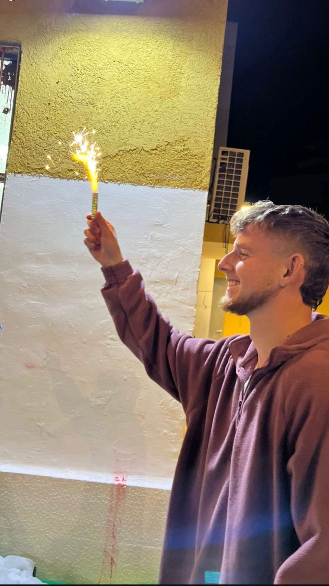

סמ"ר עמית פרידמן ז"ל
2005 – 2024
לוחם בחטיבת הנח"ל, נפל בקרב ברפיח
ביום כ"ד באב תשפ"ד (27.8.2024)
ביום כ"ד באב תשפ"ד (27.8.2024)
"מעצבן אותי אנשים שמפסידים חוויות
בגלל שלא היה להם כח לקום"
בגלל שלא היה להם כח לקום"
